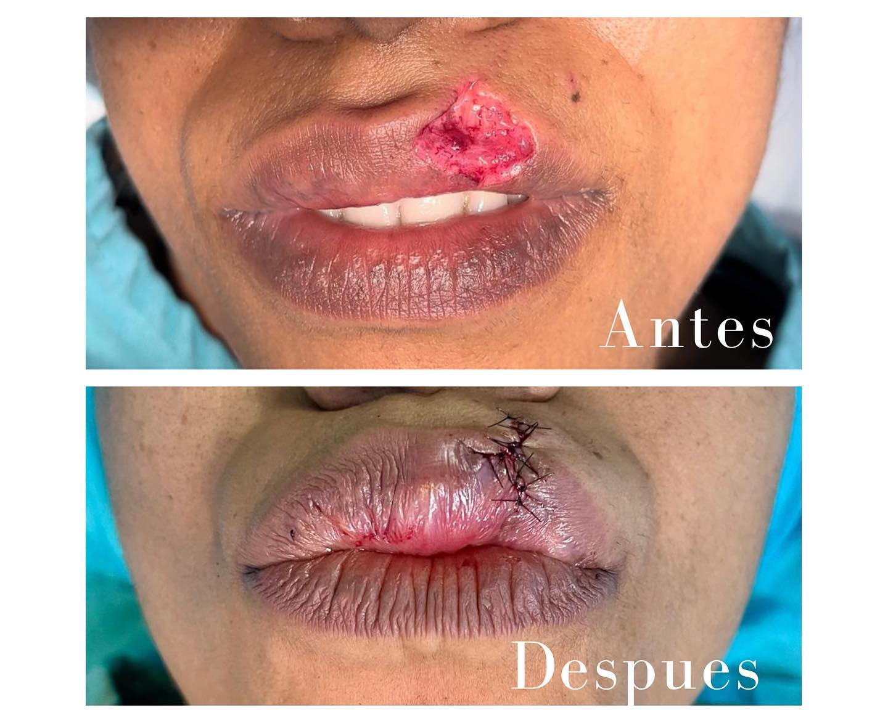
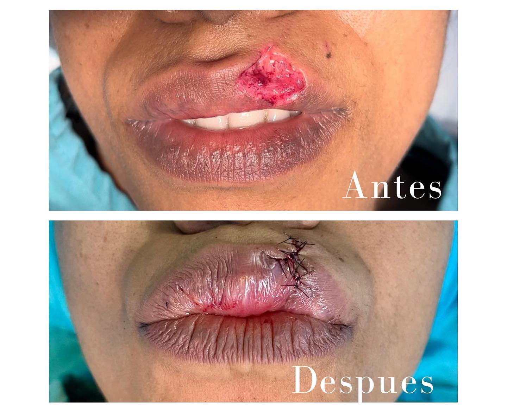

El Dr. Jorge Báez es un cirujano bucomaxilofacial e implantólogo con una trayectoria marcada por su dedicación y
compromiso con la excelencia en la atención médica. Sus estudios los realizó en el Hospital Docente y Universitario
Dr. Darío Contreras, respaldado por la prestigiosa Universidad Autónoma de Santo Domingo.
Durante su formación, tuvo el honor de desempeñar roles de liderazgo destacados, como jefe de residentes
en su especialidad y jefe general de residentes en el hospital. En estas posiciones, no solo demostró su
destreza clínica, sino también su habilidad para guiar y motivar a médicos en formación en diversas áreas,
incluyendo neurocirugía, anestesiología, ortopedia y emergenciología, además de su especialidad en cirugía
maxilofacial.
Su búsqueda constante de conocimiento y experiencia lo llevó a realizar entrenamiento especializado en cirugía
ortognática en el reconocido Hospital Juárez de México. Además, tuvo la oportunidad de rotar por diversas
especialidades médicas, como cirugía general, cirugía plástica, otorrinolaringología, anestesiología,
neurocirugía, oncología y medicina interna, en diferentes hospitales de Santo Domingo.
En los últimos años, el Dr. Jorge Báez ha ejercido su especialidad en cirugía maxilofacial en la Clínica
Odontológica Plaza Dental, ubicada en la encantadora ciudad de Jarabacoa, en la República Dominicana.
En este entorno, ha brindado cuidado especializado a sus pacientes, combinando su experiencia clínica
con un enfoque personalizado y compasivo hacia cada persona que busca su ayuda. Su compromiso con la
excelencia y su dedicación a mejorar la calidad de vida de quienes lo rodean lo han convertido en un recurso
valioso en la comunidad odontológica local.
¡¡Advertencia estas imagenes no son actas para todo publico¡¡
 (1).png) 
